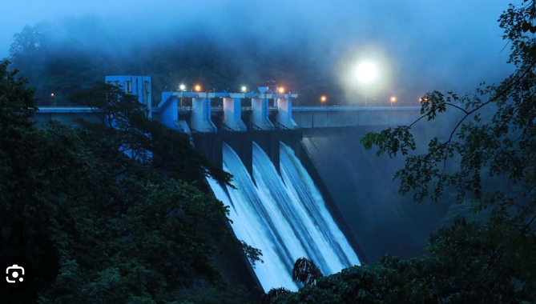
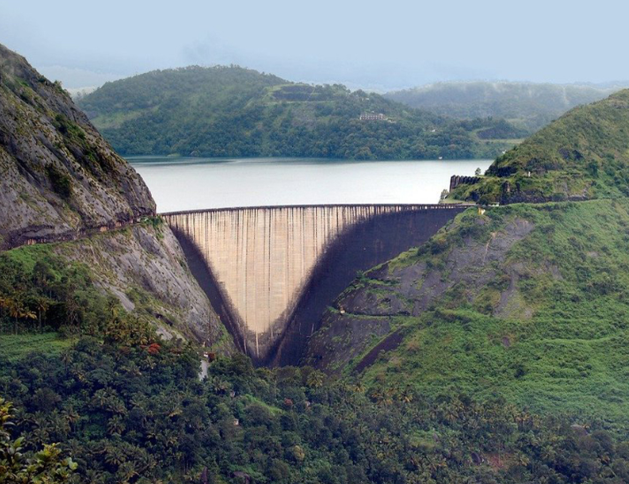
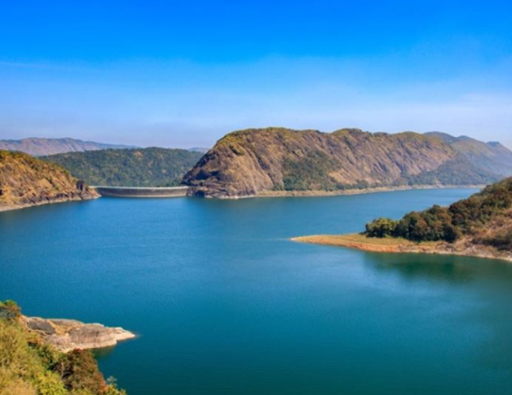
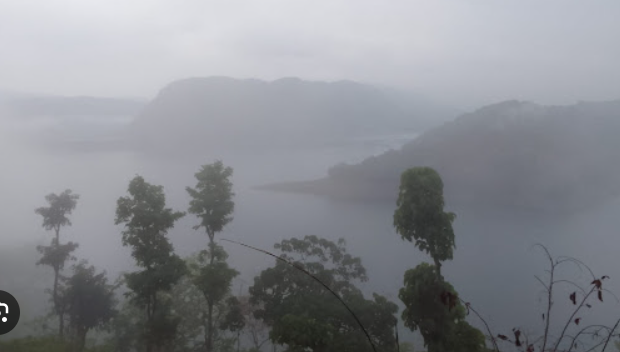
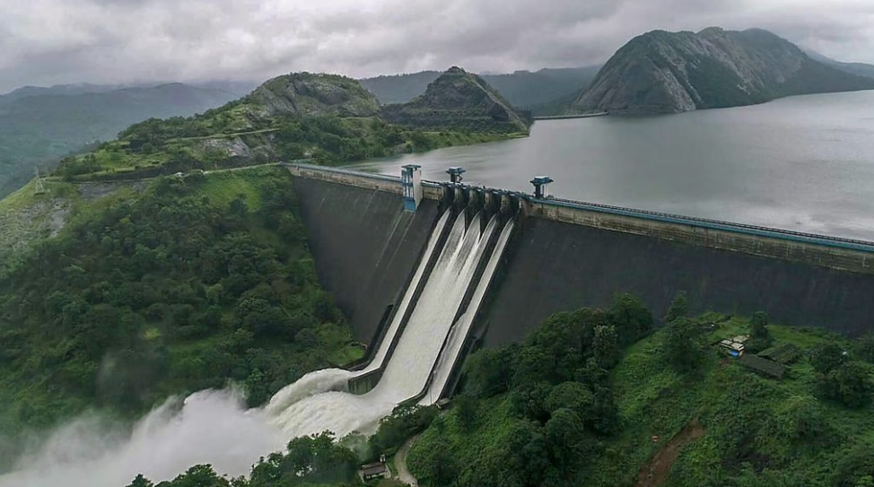

Idukki Dam is one of the most famous landmarks in Kerala, located in the Idukki district. It is a huge arch dam built across the Periyar River between two hills called Kuravan and Kurathi. The dam is known for its strength, beautiful surroundings, and importance in generating hydroelectric power. The area around the dam is covered with green forests and hills, making it a popular tourist attraction. Visitors come to enjoy the scenic views, calm atmosphere, and the impressive structure of the dam.





Idukki Dam is one of the highest arch dams in Asia and the largest arch dam in India. It is built across the Periyar River between the Kuravan and Kurathi hills in Idukki District, Kerala. The dam is famous for hydroelectric power generation, scenic beauty and tourism.
The name "Idukki" comes from the Malayalam word "Idukku", which means a narrow gorge. The dam is constructed across a deep gorge between the Kuravan and Kurathi hills.
Construction of the Idukki Dam began in 1969 by the Kerala State Electricity Board (KSEB). The dam was completed in 1975 and inaugurated to generate hydroelectric power. Today, it is one of Kerala's greatest engineering achievements and an important source of electricity.
The Idukki Hydroelectric Project is one of Kerala's largest power generation projects. It supplies electricity to different parts of the state and plays an important role in meeting Kerala's energy needs.
The surroundings of Idukki Dam are covered with evergreen forests, grasslands, medicinal plants and rich vegetation. The area supports a wide variety of plant and animal life.
Today, Idukki Dam is one of Kerala's most important hydroelectric projects and a major tourist attraction. It supplies electricity to the state and attracts thousands of visitors every year because of its engineering design and natural beauty.